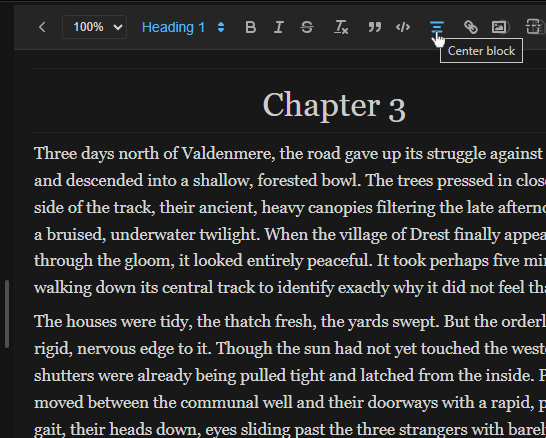
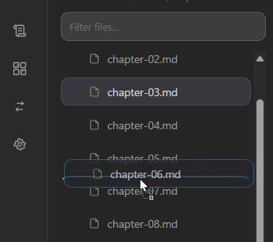
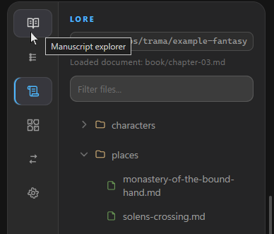

Designed for Creative Writing
Built specifically for novelists, screenwriters, and world-builders.
Formatting & Flow
Go beyond standard Markdown. Trama includes built-in formatting tools crafted specifically for manuscript preparation, ensuring your prose looks perfect without breaking your focus.
- Built-in extensions to center text, insert page breaks, and add extra white space
- Smart typography: type
--for an em-dash (—) and<<for guillemets (« ») - Formatting is translated smoothly when exporting to other formats (like PDF or EPUB).

Drag & Drop Ordering
Structure your manuscript visually. Reorder your chapters and scenes effortlessly right from the sidebar. Your chosen sequence directly dictates the final structure when you export your book.
- Intuitive visual organization
- Reorder folders and documents instantly
- Seamless synchronization with your export compiler

Dedicated Notes
Keep your world-building and character profiles entirely separated from your primary manuscript. Work on your lore without worrying about it accidentally ending up in your published export.
- Isolated sections for Lore, Outlines, and Book drafts
- The export compiler selectively ignores your notes
- Keep your references handy in a split pane while drafting
